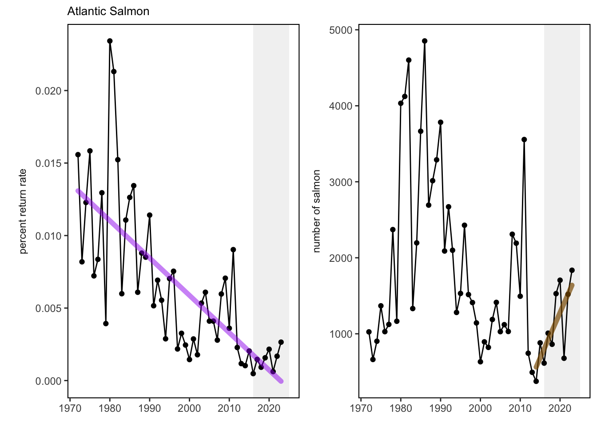

SMART Indicator Report: Gulf of Maine Atlantic salmon
3 Indicator brief description
The data presented here are time series of documented Atlantic salmon returns to Gulf of Maine rivers since 1972 and return rates for two sea winter returns from hatchery smolt stocking in the Penobscot River during the same time frame.
4 Indicator visualization
A significant and persistent decrease in marine productivity of North American Atlantic salmon populations occurred around 1990, which impacted U.S. adult spawner abundance. Since the GOM DPS was listed as Endangered under the ESA in 2000, primary threats remain marine survival, climate change, and dams. Abundance remains critically low and hatchery fish are the primary population component as indicated by adult counts at traps in large rivers and redd surveys in smaller coastal drainages (USASAC 2024). Atlantic salmon adult returns in 2023 were estimated at 1,836 with 87% originating from hatchery supplementation and 86% returning to the Penobscot River from smolt stocking. Abundance remains critically low relative to recovery targets of 6,000 naturally-reared returns with only an estimated 237 natural returns. Return rate of Penobscot River hatchery origin 2SW salmon was 0.27%, nearly 1.6 times the rate for 2022 returns. While rates are comparable to the last decade they are significantly lower than rates needed to meet recovery targets.

5 Indicator documentation
5.1 Are indicators available for others to use (data downloadable)?
Yes
5.1.1 Where can indicators be found?
Data: https://noaa-edab.github.io/ecodata/index.html
Description: https://noaa-edab.github.io/catalog/gom_salmon.html
Technical documentation: https://noaa-edab.github.io/tech-doc/gom_salmon.html
5.1.2 How often are they updated? Are future updates likely?
[need sequential look at datasets for update frequency. Future requires judgement]
5.1.3 Who is the contact?
Jon Kocik (john.kocik@noaa.gov); Tim Sheehan (tim.sheehan@noaa.gov)
5.2 Gather indicator statistics
5.2.2 Length of time series, start and end date, periodicity
General overview: Annually 1972-2023
Indicator specifics:
Indicator | EPU | StartYear | EndYear | NumYears | MissingYears |
|---|---|---|---|---|---|
PSAR | no EPU field | 1972 | 2023 | 52 | 0 |
Total | no EPU field | 1972 | 2023 | 52 | 0 |
5.2.3 Spatial location, scale and extent
General overview: EPU = Gulf of Maine
Indicator specifics:
Indicator | EPU |
|---|---|
PSAR | no EPU field |
Total | no EPU field |
5.3 Are methods clearly documented to obtain source data and calculate indicators?
Yes
5.4 Are indicator underlying source data linked or easy to find?
Source data are publicly available.
5.4.2 How/by whom are source data updated? Are future updates likely?
Debra Palka debra.palka@noaa.gov
[likelihood of source data updates requires judgement, enter by hand]
6 Indicator analysis/testing or history of use
6.1 What decision or advice processes are the indicators currently used in?
US Atlantic salmon historically ranged as far south as Long Island Sound but current populations are restricted to Maine. Populations south of Maine were extirpated in the 1800’s. The Gulf of Maine Atlantic Salmon Distinct Population Segment (GOM DPS) supported local commercial fisheries until a 1947 closure. Populations remained low (< 500) until the modern hatchery restoration programs started in the late 1960’s. Comprehensive monitoring started in 1972 and a key salmon indicator is estimated adult returns to monitored rivers of the Gulf of Maine. Stocking led to relatively rapid population rebuilding. However, a significant and persistent decrease in marine productivity of North American Atlantic salmon populations occurred around 1990, which impacted U.S. adult spawner abundance. Adult salmon typically return to freshwater to spawn after two winters at sea (2SW) with higher return rates than those spending one winter at sea (1SW) or longer. Most 2SW spawners are female hatchery-origin fish, making their return rate a crucial indicator of marine productivity. Return rates are calculated from known smolt stocking numbers and locations with adjustments for freshwater losses and counts of returning hatchery adults to the Penobscot River [67]. Together, abundance and return rates are key indicators of population status and marine productivity.
6.2 What implications of the indicators are currently listed?
Decreased productivity linked to a regime shift resulted in a cascading effect of ecosystem conditions driven by large-scale oceanic changes. These large scale changes have impacted temperature, current patterns, and primary and secondary production dynamics throughout the Northwest Atlantic range of Atlantic salmon. Changes impacted the forage base overall and especially capelin where distribution, abundance, size and energy density changed rapidly. Although many ecosystem conditions in the Northwest Atlantic have reverted back to their pre-1990 conditions, a corresponding increase in U.S. Atlantic salmon marine productivity has not been noted. While abundance is relatively steady, it is at critically low levels and highly dependent upon conservation hatchery production levels.
6.3 Do target, limit, or threshold values already exist for the indicator?
[Fill by hand; if not in key results or implications, likely does not exist]
6.4 Have the indicators been tested to ensure they respond proportionally to a change in the underlying process?
[Fill by hand; if not in introduction, key results, or implications, likely not tested]
7 Comments
[Fill below by hand once above data complete]
7.1 Additional potential links to management in addition to uses listed above
7.2 What additional work would be needed for the Council to use the indicator?
7.3 What issues are caused if there is a gap or delay in data underlying the indicator